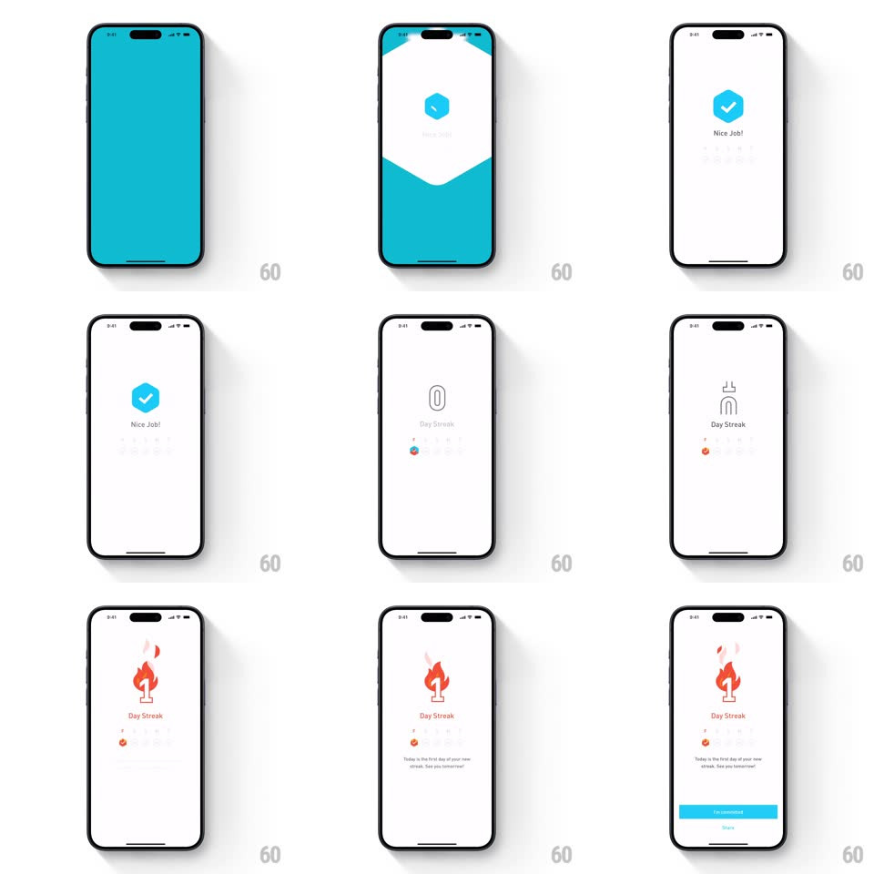

Media
Frame-by-frame

Rebuild this interaction 1:1: Elevate's streak reveal - a teal full-screen flash gives way to a white sheet where a hexagon check badge ("Nice Job!") hands off to a counting streak numeral that ignites into an orange flame illustration ("1 Day Streak").

Rebuild this interaction 1:1: Elevate's streak reveal - a teal full-screen flash gives way to a white sheet where a hexagon check badge ("Nice Job!") hands off to a counting streak numeral that ignites into an orange flame illustration ("1 Day Streak").
## Integration
Integration: stack-agnostic spec - springs given as stiffness/damping, timed motions as duration + curve; map every value to your framework and animation library of choice.
## Scene
Sequence on white: teal hexagon badge with white check and "Nice Job!"; then a large outlined "0" with "Day Streak" beneath and a small flame icon below; the numeral becomes 1 and an orange-red flame illustration grows behind it; closing line "Today is the first day of your new streak. See you tomorrow!" and a teal Continue bar.
## Motion spec
Pattern: badge-to-flame celebration handoff.
- The teal flash wipes away like a receding wave (bottom-up, 450ms) revealing white.
- The hex badge pops in (scale 0 -> 1, spring ~400/18) with "Nice Job!" fading up; it holds ~900ms, then shrinks and drops (scale -> 0.8, falls 40px, fades, 300ms).
- The "0" draws in as an outline (stroke trim, 300ms); the digit rolls 0 -> 1 (200ms) and the flame illustration builds behind it - base flame first, inner flame and sparks staggering in (60ms apart, scale springs ~420/20).
- The flame flickers alive (scale 1 <-> 1.03 with slight skew, ~800ms loop); the closing line fades up; the Continue bar slides up and lights teal.
## Calibration
- Exactly one digit handoff: 0 -> 1 - the count-up is a single satisfying tick.
- Flame is illustration, not emoji - layered orange/red shapes with two spark dots.
## Reduced motion
Simple crossfades between badge, numeral, and flame states.
## Don't miss
- The teal wave recedes downward, like a curtain dropping away.
- "Day Streak" stays constant while the numeral and flame change around it.